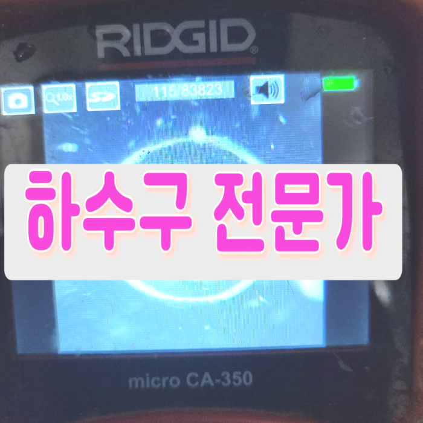
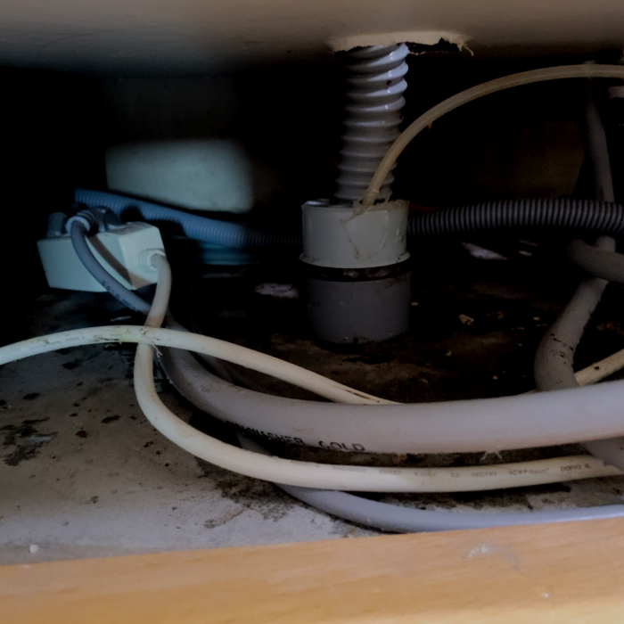
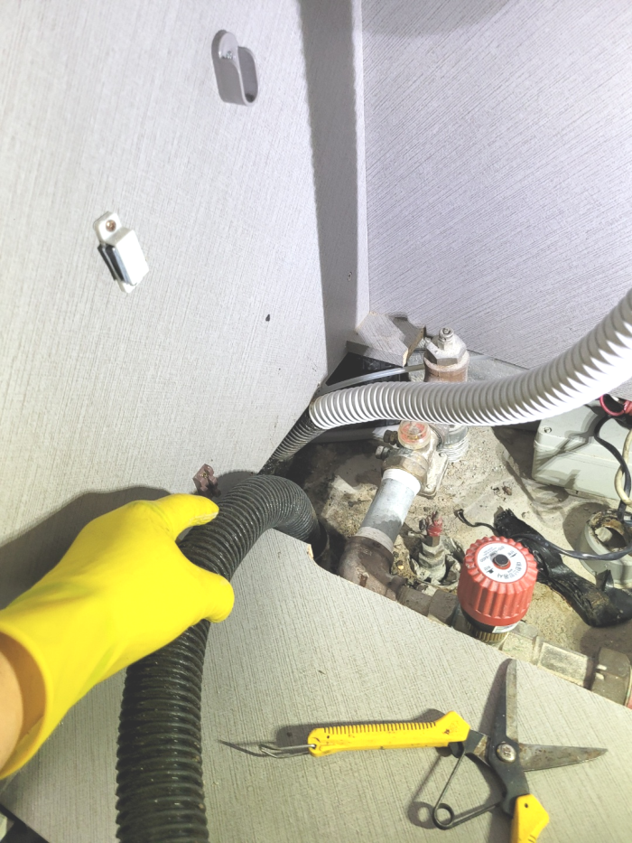
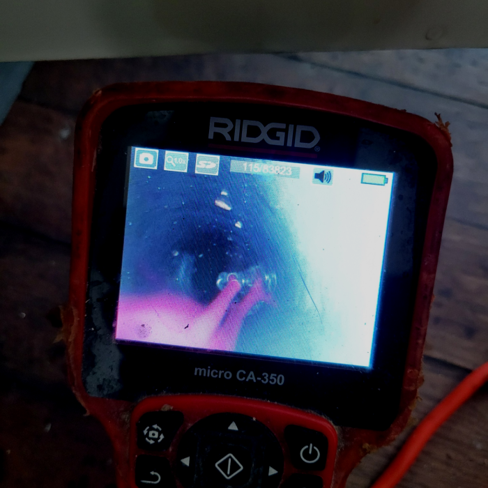
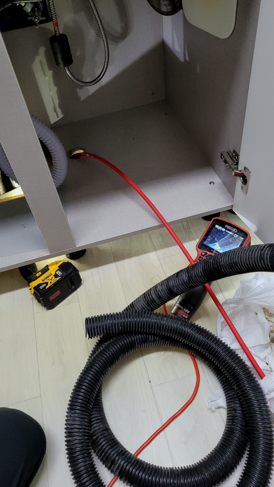
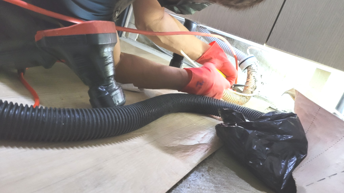

🏠 종로 창신동싱크대역류 궁정동 냄새차단 출장설비
서울 종로구 싱크대막힘 전문 시공 후기

📋 작업 개요
- 위치: 서울 종로구, 종로구, 서울
- 서비스 유형: 싱크대막힘, 변기막힘, 하수구막힘, 배관막힘, 역류해결, 뚫는업체, 배관청소, 악취차단
- 작업 일시: 2025. 2. 22. 23:17
- 업체명: 하수구수사대 (010-5615-2118)
🔍 문제 상황
반갑습니다^^
설비전문업체 "하수구수사대"를 찾아주셔서 감사드려요^^
우리나라는 사계절 변화가 뚜렷한 만큼 계절의 영향을 많이 받는배수 같은 설비에 문제가 발생할 확률이 높습니다.
우선 이미 배출구에 악취가 올라오고 있었고 이걸 해결하기 위해서 다시 석션기를 넣어서 끌어올려서 이물질부터 제거했습니다. 우리가 늘 몸을 샤워하면서 청결하게 하듯이 이곳도 마찬가지입니다. 자주 배출구를 주기적으로 관리를 하면서 진행하고 있기에 그만큼 잘 알아보고 하셔야 합니다.

🔎 원인 분석
💡 전문가 진단: 종로 송월동 씽크대배수관막힘 교남동 바닥물역류 뚫는곳 설비
종로 송월동 씽크대배수관막힘 교남동 바닥물역류 뚫는곳 설비
작업 시간은 고객님에게 맞춰서 진행하고 있기 때문에 배수 막힘으로 불편을 겪고 계신다면 언제든지 연락하여 주시면 어디라도 가리지 않고 출동하여 어려움을 해소해 드립니다.
수도권 모든 지역에서 경력 있는 배수구기사님들이 대기하고 있기 때문에 계신 지역이 어디든지 방문 드릴 수 있으며 아무리 심각한 상황이라고 할지라도 빠르게 대처해 드리기 위해서 1시간 이내 도착을 약속하고 있습니다.
간단한 석션 작업만으로 제거할 수 있었던 이물질도 내버려 두게 되면 나중에는 배출관 스케일링을 받아야 하는 상황까지 이어질 수 있습니다. 또한 역류가 일어난 상황으로 번지면 아래층에까지 피해를 주게 되어 피해 보상까지도 해줘야 할 수 있습니다.

🔧 작업 과정
배관 안에 있는 것이 무엇인지 파악도 못해놓고 통수만 해준다면 다시 막혀버리게 되는 경우의 수만 늘어나게 되겠죠. 배관스케일링을 할 때는 여러 번 받을게 아니라 딱 한 번만으로 해결해야 해요.
기름을 그대로 씻기보다는 타월로 한 번 닦아주어야 하며 따뜻한 물을 흘려보내면 하수도 막힘을 예방할 수 있습니다. 주의 사항 등을 고객님께도 말씀드려 재발을 방지하도록 해주었습니다. 위와 같이 하수도막힘으로 고민이 있으시다면 저희하수도 업체로 편하게 연락해 주시기를 바랍니다.^^
경력이많은 경력자분들이 도착해서 고쳐드리고있기에 어떤곳이든 해결하고있습니다.오랫동안 의뢰하시는 단골분들이 계실수있는 이유가있다면 한번만고치고 마는게아니기때문입니다.
초보자가 선뜻 배수관 작업을 시도하다가 문제가 발생한 경우, 신중하게 점검 후 적절한 해결책을 제시하려고 노력했습니다. 또한, 작업 도중 예상치 못한 상황에 대비해 빠르게 대응하고, 작업이 끝난 후에는 고객과 함께 상세히 확인하며 만족도를 높이려고 했습니다.
아무리 촘촘한 거름망을 써도 얇은 머리카락은 걸리지 않고 몇 가닥씩 들어갈 수 밖에 없는데 석회가 가득 들어차 있는 배관배관이라면 당연히 몇 가닥의 머리카락이나 모래와 같은 이물질도 큰 문제를 만들 수 있습니다. 이런 방법을 예방하기 위해서는 석회 제거제를 사용하거나 배관배수 클리너로 청소를 해주는 것이 좋습니다.
배수관막힘으로 인한 불편은 대부분 비슷하지만 정작 불편을 초래한 원인에는 차이가 있기 때문에 이를 제거하고 수습하는 방법도 상이합니다.


✅ 작업 완료
저희는 수도권 전 지역을 돌며 작업을 진행하고 있습니다. 화장실 배수구 막힘 현장뿐만 아니라 저희의 도움이 필요한 곳이라면 어디든지 달려가고 있기 때문에 퇴수구문제가 발생하였다면 고민하지 마시고 연락 주세요.
#하수구막힘 #하수구뚫음 #하수구역류 #씽크대막힘 #싱크대역류 #오수관막힘 #하수구청소 #욕실하수구막힘 #변기막힘 #하수구뚫는비용 #싱크대수리 #화장실막힘




⚠️ 주방 싱크대 배관 막힘 예방 수칙
- ✅ 기름기가 묻은 식기나 프라이팬은 설거지 전 키친타올로 반드시 기름때를 닦아내세요.
- ✅ 주기적으로 싱크대 개수대에 뜨거운 물을 가득 받아 한 번에 내려 배관 내부 기름을 씻어내세요.
- ✅ 배수구 거름망을 미세한 필터로 사용하시고 음식물 찌꺼기가 틈으로 새어 들지 않게 관리하세요.
- ✅ 베이킹소다와 식초를 뜨거운 물과 함께 일주일에 한 번씩 부어주면 배관 살균과 막힘 예방에 좋습니다.
💡 핵심 정리
- 확실한 장비 작업(내시경 점검 및 샤프트 스케일링)으로 원인을 뿌리 뽑습니다.
- 작업 후 1년 이내에 동일한 부위 재발 시 100% 무상 A/S 서비스를 보장합니다.
- 서울 · 경기 · 인천 전 지역에 24시간 언제든 긴급 출동할 수 있도록 항시 대기 중입니다.
❓ 자주 묻는 질문 (FAQ)
🚨 서울 종로구 싱크대막힘 문제로 고민이신가요?
정확한 원인 진단과 확실한 시공으로 재발 없는 해결을 약속드립니다.
24시간 긴급 출동 | 서울 · 경기 · 인천 전지역 | 1년 내 재발 시 무상 A/S